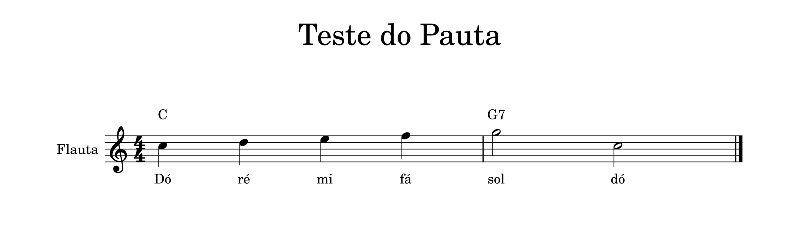

FREE MAC APP
Sheet music, no fuss.
Write music with the keyboard, the mouse or a MIDI keyboard. Listen, make the parts for each instrument and print. Opens MusicXML, MIDI and MuseScore files.
Nothing leaves your Mac.No account.No ads.Free.

Why use it
🔒
Nothing leaves your Mac
Your scores stay on your computer. No cloud required.
🙅
No account, no login
Open it and write. No MuseHub, no e-mail.
🎹
Sound included
Plays right away, no gigabytes to download.
⌘
Command palette
Cmd+Shift+P and type the name of any command.
🎼
Keyboard that lights up
The on-screen piano shows the notes while the music plays.
🔄
Updates itself
Tells you when a new version is out. Speaks Portuguese and English.
What it does
Write
- Notes by keyboard, mouse, on-screen piano or MIDI keyboard
- Lyrics, chord symbols and chord diagrams
- Tablature and drums
- Dynamics, articulations, repeats
Listen
- Playback with a mixer
- Reverb on/off in one click
- VST3 sound plugins
- Loop a passage, metronome
Arrange
- Parts for each instrument, linked to the score
- Transposition
- Unroll repeats
Open and save
- MusicXML, MIDI, MuseScore (.mscz), Guitar Pro
- PDF, PNG, SVG
- MP3, WAV, FLAC audio
What’s new
How to install
- Download Pauta (file
.dmg). - Open it and drag Pauta into Applications.
- Open Pauta from Applications.
- The first time, the Mac says it can’t verify the app, because it is free and didn’t go through Apple’s store. Open System Settings → Privacy & Security, scroll down and click Open Anyway. You only do this once.
- The Mac also asks for access to Documents: that’s where Pauta keeps your scores.
Privacy
Pauta has no account, collects no data and never sends your scores anywhere. It only goes online once a day, to check for a new version.
HELP ME: I'VE GOT 5 MOUTHS TO FEED
Thank you
Pauta is and will stay free. I made it for you. Thank you for using it! — Mateus